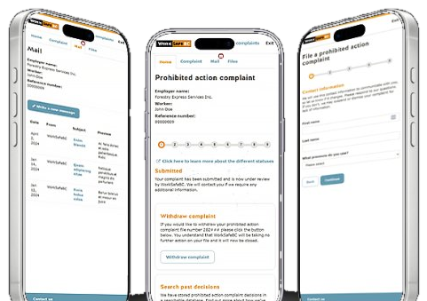
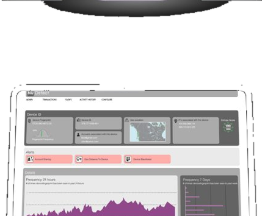
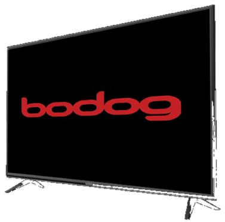
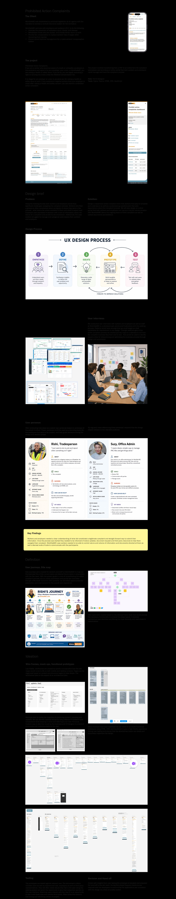
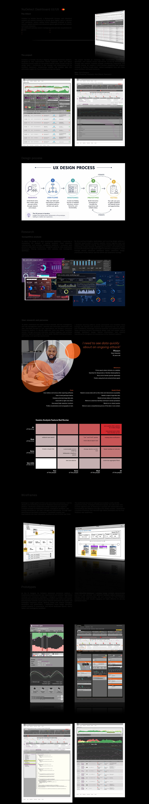

UXUI Design
by Sandy IsaacsIntuitive interfaces
that drive measurable results
Case studies

WorkSafeBC
Prohibited Action Complaint, responsive app
WorkSafeBC provides information and services to prevent workplace injuries, diseases and deaths in BC. The Prohibited Action Complaint application allows workers to report misconduct by employers or unions.
View case studyUI | UX Designer
Figma

NuData Security, a Mastercard company
Dashboard and data visualisations
NuData Security is a critical element of the Mastercard Cyber and Intelligence business which is helping to create a secure and inclusive digital future with a range of identity, cyber and AI technologies.
View case studyUI Designer
Ps
Ai

Bodog
Visual ID
The Bodog Sportsbook offers the latest NFL Odds, NBA betting options, a huge variety of NHL odds, the best MLB odds and Super Bowl in Canada.
Graphic Designer
Ps
Ai

